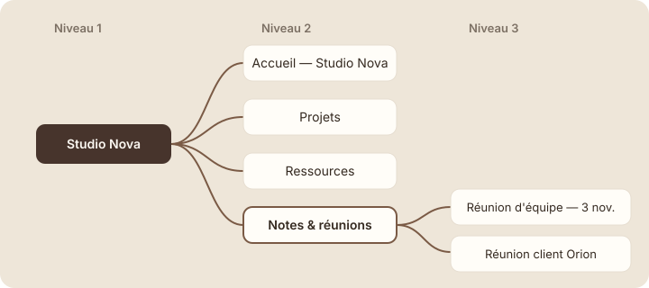

L'arborescence
À la fin de cette leçon, tu sauras ranger tes pages les unes dans les autres et déplacer une page sans rien perdre.
Étape 1 : comprendre
Au module 2, tu as rangé « Accueil », « Projets » et « Ressources » à l'intérieur de « Studio Nova ». Sans le savoir, tu as commencé une arborescence.
Une arborescence, c'est la façon dont les pages sont rangées les unes dans les autres, comme les branches d'un arbre. Pense aux dossiers de ton ordinateur : un dossier « Clients » contient un dossier par client, qui contient lui-même des documents. Dans Notion, c'est pareil, sauf que chaque « dossier » est aussi une page qu'on peut remplir.
Deux mots reviennent souvent :
- la page parente : celle qui contient d'autres pages. « Studio Nova » est la page parente de « Projets » ;
- la sous-page (ou page enfant) : celle qui est rangée dedans.
Une page peut changer de place à tout moment. Pour la déplacer, tu peux la glisser dans la barre latérale sur une autre page, ou ouvrir le menu ··· en haut à droite de la page et choisir « Déplacer vers » (Move to). Le contenu suit : rien n'est perdu.

L'arborescence est le rangement des pages les unes dans les autres : une page parente contient des sous-pages.
Astuce : vise trois niveaux au maximum. Au-delà, on oublie où sont les choses. Si une page est très loin dans l'arbre, c'est souvent qu'il faut simplifier.
Ranger à plat ou en arborescence
Compare deux façons de ranger les mêmes pages de Studio Nova. À gauche, tout est au même niveau ; à droite, les pages sont regroupées.
| Tout au même niveau | Rangé en arborescence |
|---|---|
| 12 pages alignées dans la barre latérale. | 4 grandes pages sous « Studio Nova ». |
| Les comptes rendus de réunion se mélangent aux projets. | Les comptes rendus sont tous dans « Notes & réunions ». |
| Il faut lire chaque titre pour trouver la bonne page. | On devine où chercher avant même d'ouvrir. |
| Une nouvelle collègue ne sait pas où ranger sa page. | La place de chaque nouvelle page est évidente. |
Studio Nova ajoute aujourd'hui une quatrième partie : « Notes & réunions ». Chaque réunion y aura sa propre sous-page. Le fil d'Ariane d'un compte rendu devient alors :
Studio Nova / Notes & réunions / Réunion d'équipe — 3 novembre
En le lisant, tu sais exactement où tu es, et comment remonter.
Créer « Notes & réunions » et déplacer une page
- Ouvre ta page « Studio Nova ». En bas de la page, tape « /page » et appuie sur Entrée.
- Nomme la nouvelle page « Notes & réunions » et donne-lui une icône de ton choix.
- Dans « Notes & réunions », crée une sous-page « Réunion d'équipe — 3 novembre ». Écris-y une ligne : « Ordre du jour : point sur le site Orion ».
- Revenue dans la barre latérale, déplie « Studio Nova » puis « Notes & réunions » : ta réunion apparaît au troisième niveau.
Capture d'écran Notion Barre latérale sur trois niveaux · images/captures/m03-arborescence-barre-laterale.png
- Pour t'entraîner à déplacer : crée une page « Brouillon » directement dans « Privé ». Ouvre-la, clique sur ··· en haut à droite, puis sur « Déplacer vers » (Move to).
- Tape « Notes » et choisis « Notes & réunions ». La page « Brouillon » s'y range.
Capture d'écran Notion Fenêtre « Déplacer vers » · images/captures/m03-deplacer-vers.png
Attention : dans la barre latérale, quand tu glisses une page, regarde bien le repère bleu. Une ligne bleue range la page entre deux pages ; une page surlignée en bleu la range dedans. Si tu te trompes, Ctrl + Z (Cmd + Z sur Mac) annule.
Exercice · dans Notion
La partie « Notes & réunions »
- Crée la sous-page « Notes & réunions » dans « Studio Nova ».
- Ajoute-y une sous-page « Réunion d'équipe — 3 novembre ».
- Crée une page « Brouillon » dans « Privé », puis déplace-la dans « Notes & réunions » avec « Déplacer vers ».
Résultat attendu : sous « Studio Nova », la barre latérale montre quatre pages : Accueil, Projets, Ressources et Notes & réunions. « Notes & réunions » contient deux pages : la réunion du 3 novembre et « Brouillon ». Tu peux supprimer « Brouillon » ensuite.
Étape 4 : vérifier
À retenir
- L'arborescence range les pages les unes dans les autres : page parente, sous-pages.
- On déplace une page en la glissant dans la barre latérale ou avec ··· puis « Déplacer vers » ; son contenu la suit.
- Trois niveaux au maximum : au-delà, on se perd.
Choisis une réponse avant de valider.
Une page parente qui regroupe toutes les réunions rend leur place évidente. Une seule longue page deviendrait illisible, et les majuscules n'aident pas à ranger.
Choisis une réponse avant de valider.
Déplacer une page change seulement sa place dans l'arborescence. Son titre, son contenu et ses sous-pages la suivent.